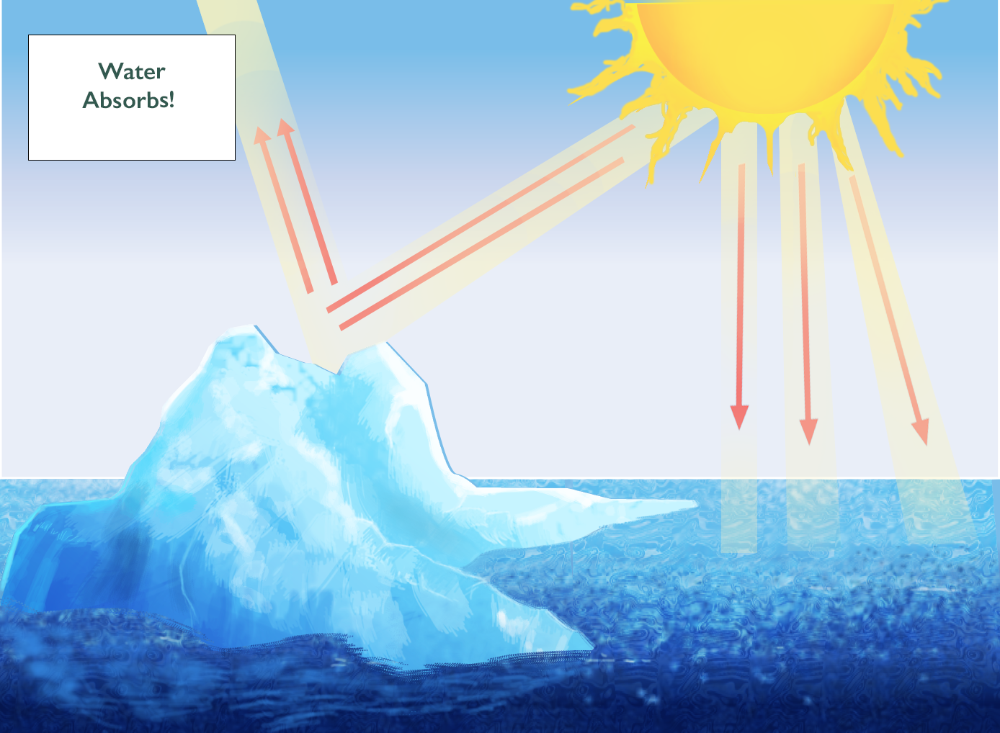
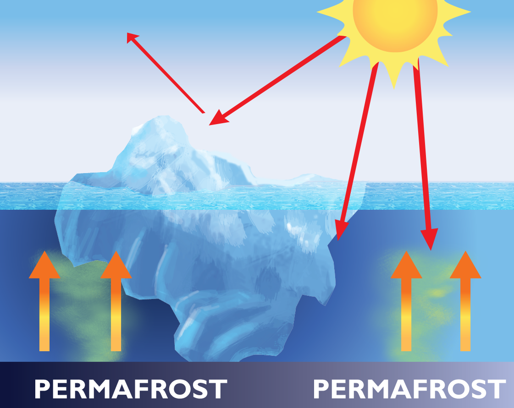

Global Warming
Infographics and Data Visualization
Areas Most Threatened by Sea Level Rise
The 20 cities where the relative risk is larger in 2005, that is, where the ratio of AAL with respect to local GDP is the largest.

What Are the Economic Consequences?

Drivers of Climate Change
Radiative Forcing
Radiative Forcing (RF) is the measure of change in atmospheric energy due to greenhouse gas emissions. Positive RF leads to surface warming, while negative RF leads to surface cooling. The increase in carbon dioxide concentration since 1750 is the largest contributor to total RF. The growth in CO2 concentration is due primarily to fossil fuel consumption and a change in land use.
CO2 Emissions by Country (in thousands of tonnes)
Tonnes of CO2 Per Capita
- Fossil Fuel Consumption


The Greenhouse Effect


Consequences of Global Warming
- Thermal expansion - Ocean becoming warmer
- Global average temperature increase
- Sea level rise
- Glacial ice melting
Ice-Albedo Feedback
Text goes here
Text goes here
Text goes here
Global Glacier Changes
The moraines from the Little Ice Age mark maximum Holocene glacier extents in many mountain ranges. From these positions, glaciers around the world show a centennial trend of ice wastage which has been accelerating since the mid 1980s. On a decadal time scale, glaciers in various regions have shown intermittent re-advances.


The number of advancing (blue) and retreating (red) glaciers are plotted as stacked columns in the corresponding survey year.